Bass lessons in Denver.
Electric and upright, from a working jazz bassist. In your home or online. Founding rates from $60 an hour, every rate published.
Bass is my main instrument.
It's the instrument I think with. Even when I play something else, I'm laying down the low context first: the root, the structure, the thing everyone else gets to stand on. If you want to know what the bass is for, that's it, and it's a great job to have.
I've had the same 1994 Fender Squier jazz bass since high school, where I played it in the drum corps pit on Frank Zappa's Village of the Sun. In 2019, after a long hiatus from music, I took the bass back out of my closet. It felt like a sword-in-the-stone moment, and I was obsessed for years. Obsession looked like this: jazz exercises in front of YouTube, two-five-one progressions for 8 to 12 hours a day, then every jam I could get to, then playing out in groups.
An Americana band brought me to the upright. I bought a rough one for $900 from a used-gear shop and threw myself at it. Fretless intonation is a whole new beast, and that bass was not in great shape, so I learned a difficult instrument the hard way. I'm still very much a student of jazz and the upright bass.
Lessons meet your hands where they are.
Starting from zero, we get a groove feeling good early, on songs you pick. Coming back after years away, we find what your hands remember and build from there. Already gigging, we go after the specific wall: walking lines, jazz vocabulary, locking with a drummer, playing off a chart in a style you don't know yet.
Everything runs on chord charts and ear. I don't teach sight-reading, and you won't need it for any of this.
You'll know what your line is doing.
There's music theory under everything. Jazz is one palette of colors, and so are flamenco, pop, rock, and R&B. On bass, theory means you understand what a line is doing to the song, so you can build your own lines instead of copying them. We use exactly as much as the music you're playing calls for.
Lay down the low end.
Four strings, E A D G, the tuning my Squier has held since high school. Each one is a physical model of a plucked string computed live in your browser. Drag across them, tap one, or use keys 1 through 4, and watch the patterns behind this page move when the low notes land.
A toy, honestly. For the real thing, book a lesson.
What the bass is for.
The page above says it: the root, the structure, the thing everyone else stands on. These five records are that job done perfectly. If you only listen to one shelf here, make it this one.
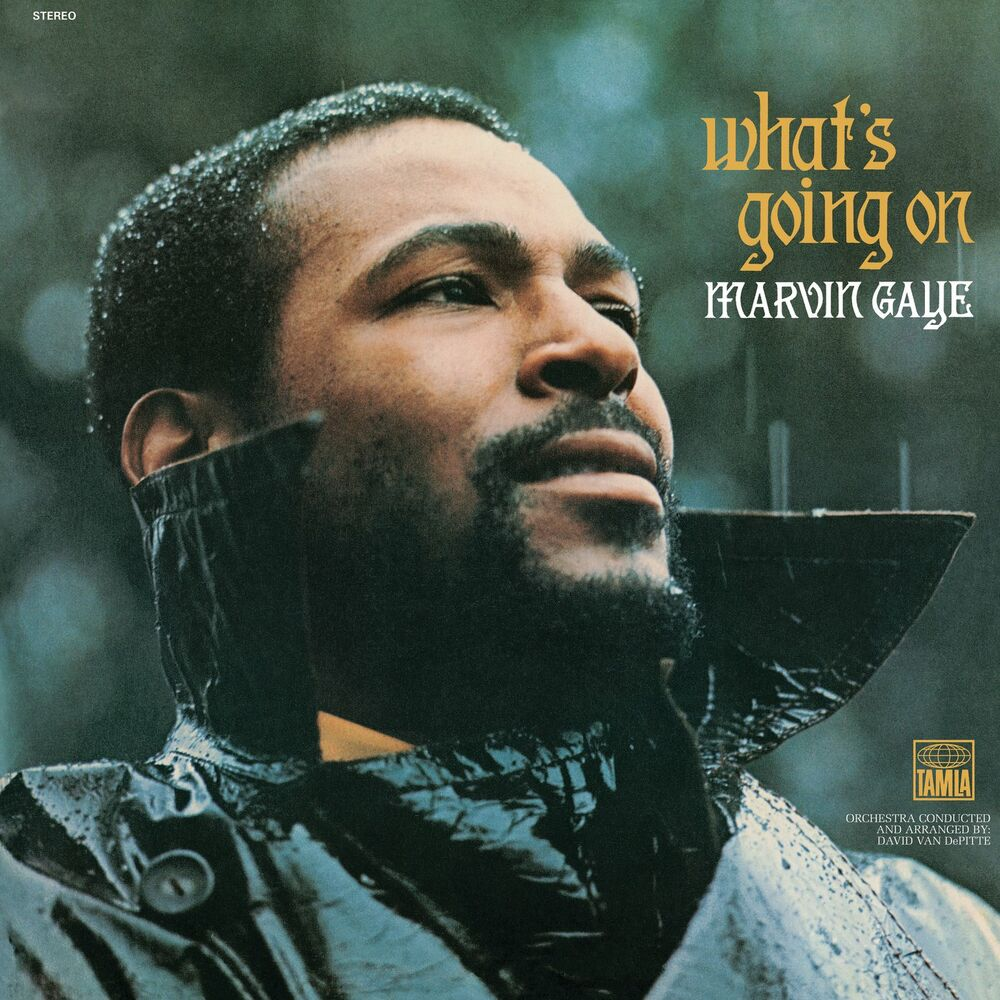
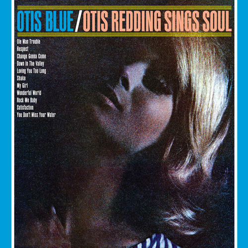
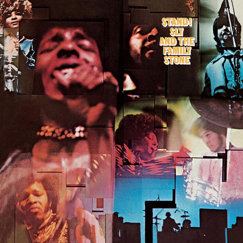
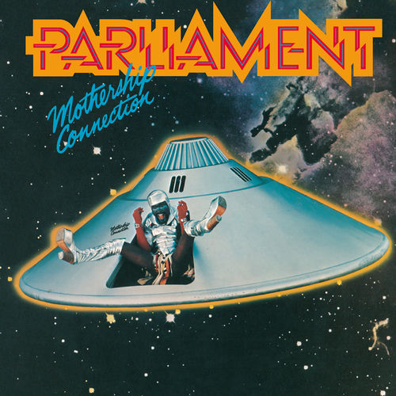
James Jamerson, What's Going On · Donald "Duck" Dunn, Otis Blue · Larry Graham, Stand! · Bootsy Collins, Mothership Connection · Pino Palladino, Voodoo
Loud bands, run from the back.
Every band here is steered by its bass player, whether the crowd knew it or not. McCartney wrote counter-melodies, Entwistle played lead from the back seat, and Geddy did both at once. Bring any of these songs to a lesson.
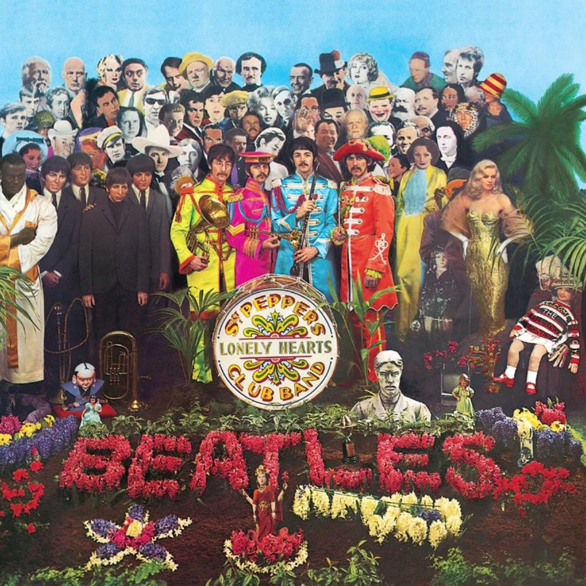
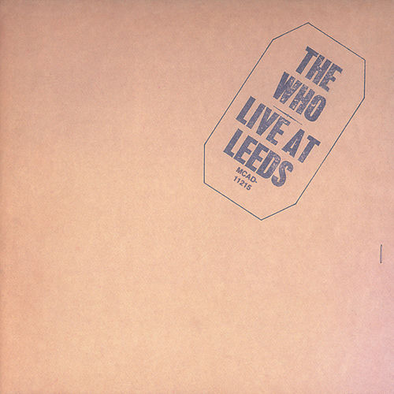
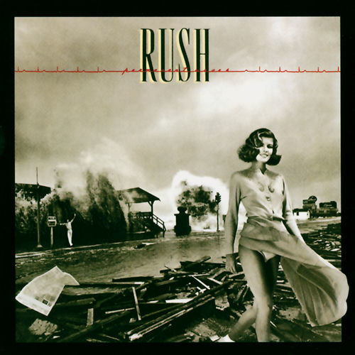
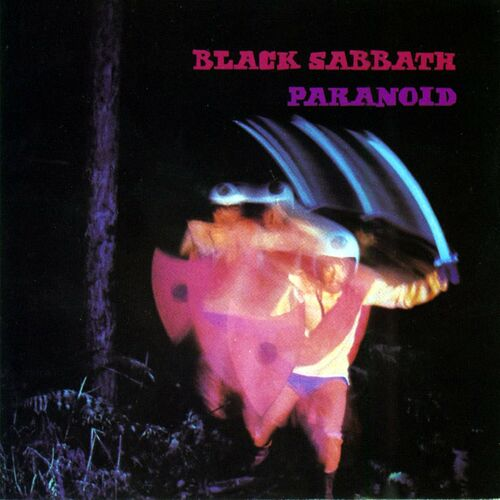
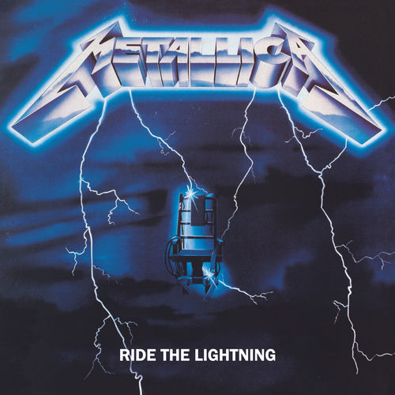
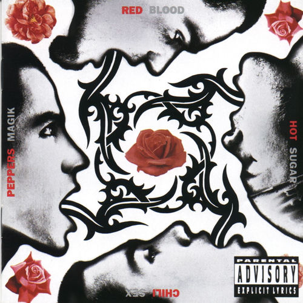
Paul McCartney, Sgt. Pepper's Lonely Hearts Club Band · John Entwistle, Live at Leeds · Geddy Lee, Permanent Waves · Geezer Butler, Paranoid · Cliff Burton, Ride the Lightning · Flea, Blood Sugar Sex Magik
The deep water I'm still swimming in.
I'm still a student of jazz and the upright, and I say so up the page. This shelf is why. Mingus the composer, Ron Carter the anchor, Jaco the revolution. Walking lines and jazz vocabulary start here when you're ready for them.
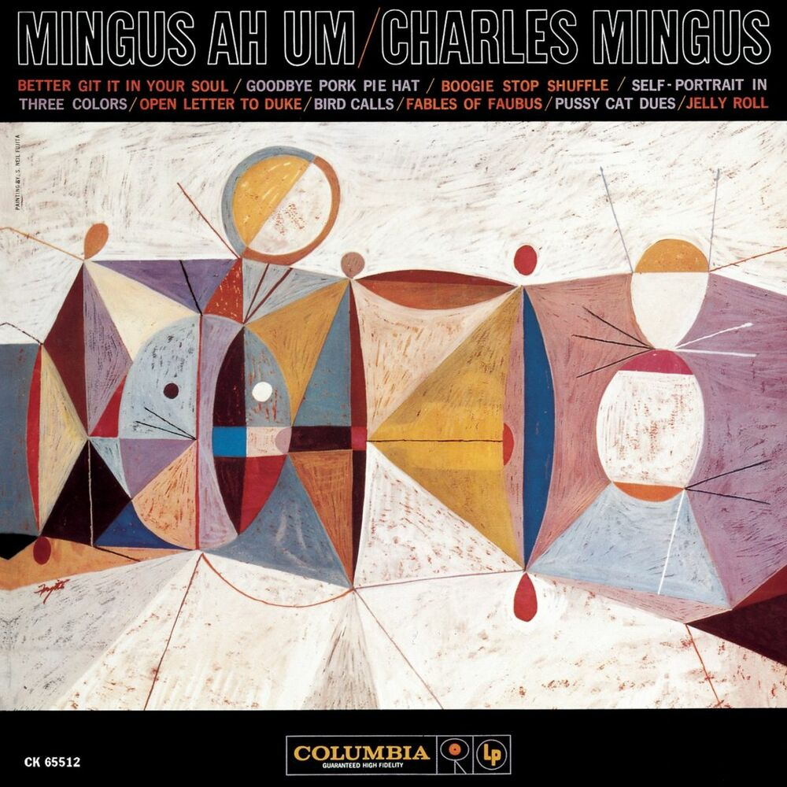
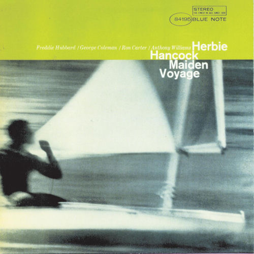
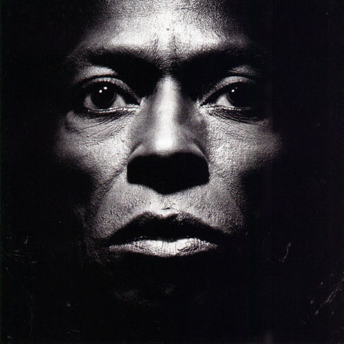
Charles Mingus, Mingus Ah Um · Ron Carter, Maiden Voyage · Jaco Pastorius, Jaco Pastorius · Marcus Miller, Tutu · Esperanza Spalding, Esperanza
Bass players hiding in plain sight.
Carol Kaye on Pet Sounds. Tina Weymouth making art school funky. Thundercat turning the bass into a lead voice. Some of the best bass ever recorded hides inside records people file under something else.
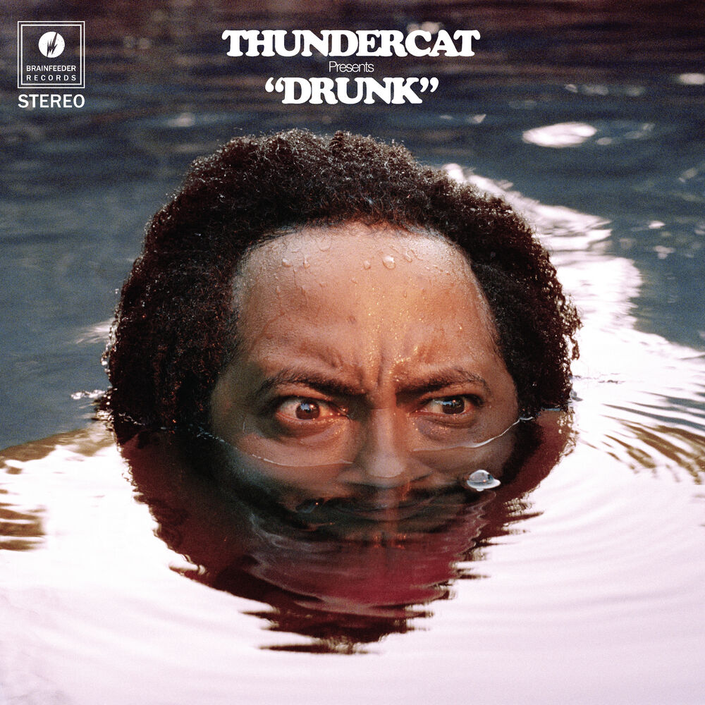
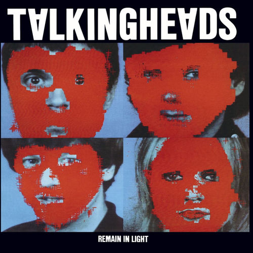
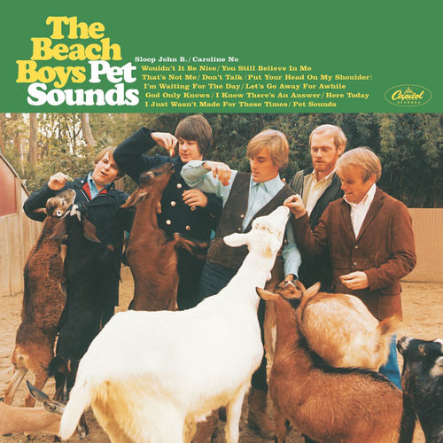
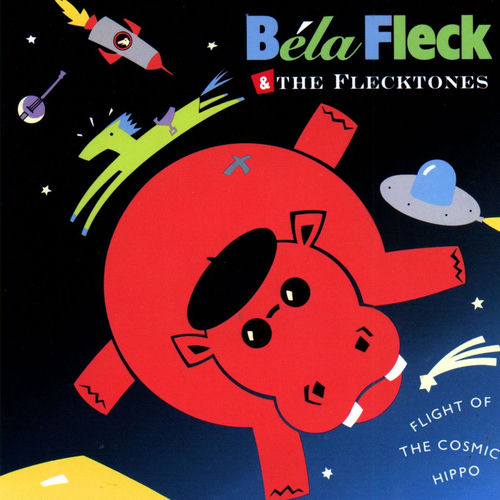
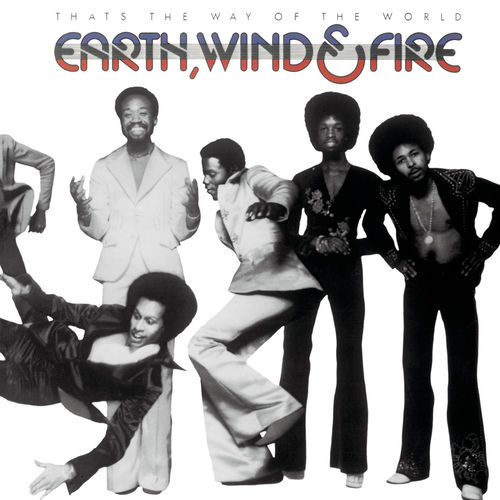
Thundercat, Drunk · Tina Weymouth, Remain in Light · Carol Kaye, Pet Sounds · Victor Wooten, Flight of the Cosmic Hippo · Verdine White, That's the Way of the World